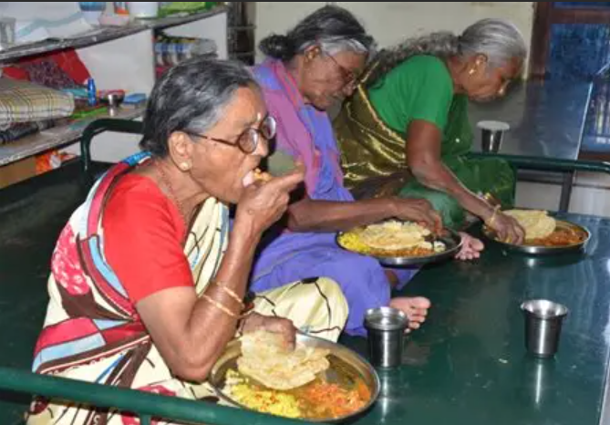
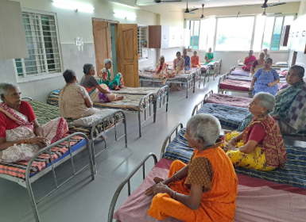
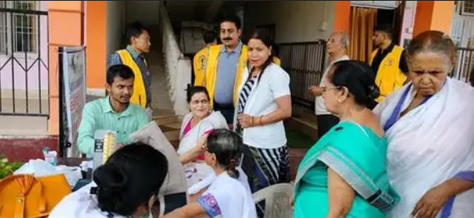

A glimpse of our work and the lives we touch through care and compassion.

We provide freshly prepared, nutritious meals to elderly residents every day. For many, this is the first time in years they receive regular food with care. A healthy meal brings not only strength, but also comfort and happiness.

Our foundation offers a safe and peaceful place to rest. Clean beds and a calm environment help elderly people feel secure after years of uncertainty. Here, they finally have a place they can call home.

Regular doctor visits ensure timely medical care and support. We provide basic medicines and health checkups so that elders do not suffer silently. Good healthcare helps them live healthier and happier lives.